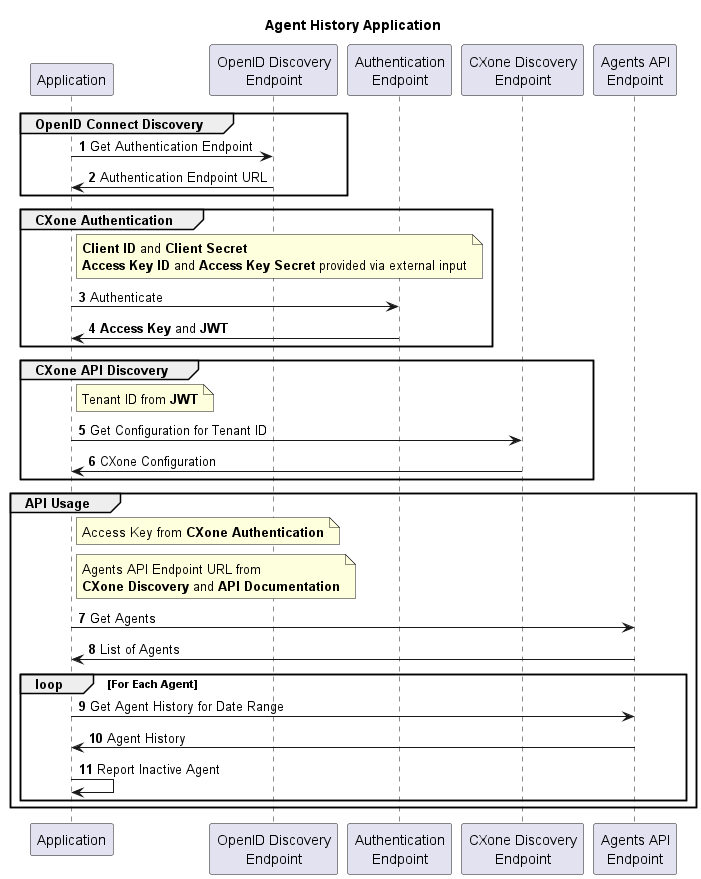

This tutorial provides a basic example of how to use CXone APIs to perform a simple task. It demonstrates the following:
-
How to handle authentication for API calls
-
How to build your base URL for CXone APIs
-
Working with Reporting APIs
Task
For all agents in a business unit High-level organizational grouping used to manage technical support, billing, and global settings for your CXone environment, report any agent that has been inactive for the previous 12 hours or longer.
High-level organizational grouping used to manage technical support, billing, and global settings for your CXone environment, report any agent that has been inactive for the previous 12 hours or longer.
Task Breakdown
This task can be broken down into a sequence of subtasks:
- Discovery of the authentication endpoint.
- Authentication of the application using the CXone authentication endpoint and credentials that have been acquired via application registration (client ID and client secret).
- Discovery of the business unit-specific CXone API endpoint.
- Use tenant ID to acquire the area and domain for the business unit's API Server.
- Use the area and domain to build the full qualified domain name (FQDN) for the business unit's API server.
- Usage of the CXone Reporting APIs to get a list of agents and each agent's history.
The following sequence diagram illustrates the interactions between the application and the endpoints referenced above.

Implementation
This example app was implemented in C# (.NET 6.0).
Credential Inputs
The application requires credentials. Those credentials include:
- Client ID: Provided by NiCE via email after approving your application registration.
- Client Secret: Provided by NiCE via email after approving your application registration.
- Access Key ID: Acquired by creating an access key for a user in the CXone UI.
- Access Key Secret: Acquired by creating an access key for a user in the CXone UI.
You can choose how to load these credentials. For the purpose of demonstrating this example task, the credential values are contained in a JSON file. Best practice for a production application is to keep the credentials in a secure location.
The following instructions assume you've already created a user account to make API calls.
- In CXone, click the app selector
 and select Admin.
and select Admin. - Click Employees.
- Locate and select your desired account.
- Click the Access Keys tab.
- Click Generate New Access Key.
- Copy the Access Key ID and paste it somewhere you can save it.
- Click (SHOW SECRET KEY).
- Copy the Secret Access Key and paste it somewhere you can save it. If you ever lose the secret key, you'll need to create a new one.
- Click Save.
Application Entry Point
The following Main function outlines the steps to accomplish the task:
public static void Main(string[] args)
{
var credentials = new ClientCredentials("[path to]\\credentials.json");
// 1. Acquire the URL of the authentication endpoint
GetTokenEndpoint();
// 2. Authenticate and acquire the access token and a JWT from the token endpoint
GetAccessTokenAndTenantId(credentials);
// 3. Extract the Area and Domain from JWT claims
GetApiAreaAndDomain();
// Build the base URL for the Agent API
GetApiEndpoint();
// 4. Use the Agent API endpoints to list agents and get their state history
ReportInactiveAgents();
}Application Constants
Three class-scoped, static constant values are used in the application for API discovery. These values don't change with respect to the business unit you're working with.
| Constant | Details |
|---|---|
| DiscoveryBaseEndpoint | Value: https://cxone.niceincontact.com The base URL to which the OpenID Connect and CXone discovery paths may be appended. |
| OpenIdDiscoveryPath | Value: /.well-known/openid-configuration This path is appended to the DiscoverBaseEndpoint. It's used to determine the URL of the token API endpoint. |
| CxOneDiscoveryPath | Value: /.well-known/cxone-configuration Appended to the DiscoverBaseEndpoint. It's used to acquire the business unit's base API endpoint. |
Key Variables
The values of the following class-scoped, static variables are defined during application execution:
| Variable | Type | Details |
|---|---|---|
| _tokenEndpoint | String |
The URL of the token-based authentication API. Populated by GetTokenEndpoint() Used by GetAccessTokenAndTenantId() |
| _accessToken | String |
The authentication token acquire through the authentication API. Populated by GetAccessTokenAndTenantId() Used by all Agent API calls |
| _tenantId | String |
The UUID that uniquely represents the business unit. Populated by GetAccessTokenAndTenantId() Used by GetApiAreaAndDomain() |
| _area | String |
The business unit's area; for example, na1. Populated by GetApiAreaAndDomain() Used by GetApiEndpoint() |
| _domain | String |
The business unit's domain; for example, nice. Populated by GetApiAreaAndDomain() Used by GetApiEndpoint() |
| _apiEndpoint | String |
The URL representing the area and domain-specific API endpoint for this business unit. Populated by GetApiEndpoint() Used by all Agent API calls |
Step 1: Get the Token Endpoint
OpenID Connect discovery is the first step to authenticating the application. In the following code block, a request is sent to the OpenID Connect discovery endpoint, which returns a JSON response. This response contains the token endpoint. The token endpoint's value is assigned to the _tokenEndpoint variable.
private static void GetTokenEndpoint()
{
var client = new HttpClient();
var request = new HttpRequestMessage()
{
RequestUri = new Uri($"{DiscoveryBaseEndpoint}{OpenIdDiscoveryPath}"),
Method = HttpMethod.Get,
};
request.Headers.Accept.Add(new MediaTypeWithQualityHeaderValue("text/plain"));
var response = client.Send(request);
response.EnsureSuccessStatusCode();
var jsonTask = response.Content.ReadAsStringAsync();
jsonTask.Wait();
var jsonText = jsonTask.Result;
var jsonObject = JsonNode.Parse(jsonText);
_tokenEndpoint = jsonObject?["token_endpoint"]?.GetValue<string>();
}Step 2: Authenticate the Application – Access Token and Tenant ID
After determining the token endpoint, next is authenticating the application. Here the app sends the credentials as key-value pairs that correspond to the client ID, client secret, access key ID, and access key secret as fields in an URL encoded form. The response contains both the access token and an ID token. The access token's value is assigned to the _accessToken variable. The ID token is parsed into a JSON Web Token (JWT). Among the claims in that JWT are the application's tenant ID. The tenant ID is extracted from the JWT and assigned to the _tenantId variable.
More information is included in the token response than just the access token. For example, a refresh token (refresh_token) and an expiration time (expires_in) in seconds that indicates how long the access token is good for. For long-running applications, refresh tokens should be used prior to the expiration of the current access token.
private static void GetAccessTokenAndTenantId(ClientCredentials? clientCredentials)
{
if (string.IsNullOrEmpty(_tokenEndpoint) || clientCredentials == null)
{
return;
}
var client = new HttpClient();
var request = new HttpRequestMessage(HttpMethod.Post, _tokenEndpoint);
var collection = new List<KeyValuePair<string, string>>
{
new("grant_type", "password"),
new("client_id", clientCredentials.ClientId),
new("client_secret", clientCredentials.ClientSecret)
new("username", clientCredentials.AccessKeyId),
new("password", clientCredentials.AccessSecret),
};
request.Content = new FormUrlEncodedContent(collection);
var response = client.Send(request);
response.EnsureSuccessStatusCode();
var jsonTask = response.Content.ReadAsStringAsync();
jsonTask.Wait();
var jsonText = jsonTask.Result;
var jsonObject = JsonNode.Parse(jsonText);
if (jsonObject == null)
{
return;
}
_accessToken = jsonObject["access_token"]!.GetValue<string>();
var idToken = jsonObject["id_token"]!.GetValue<string>();
var jwt = new JwtSecurityTokenHandler().ReadToken(idToken) as JwtSecurityToken;
_tenantId = jwt?.Claims.First(c => c.Type.Equals("tenantId")).Value;
}Step 3: Discover Your Base URL
After acquiring the tenant ID, you can discover the API endpoint using a call to the CXone discovery endpoint. The _area and _domain variables are populated by the response from a CXone discovery request.
private static void GetApiAreaAndDomain()
{
if (string.IsNullOrEmpty(_tenantId))
{
return;
}
var discoveryEndpoint = $"{DiscoveryBaseEndpoint}{CxOneDiscoveryPath}?tenantId={_tenantId}";
var client = new HttpClient();
var request = new HttpRequestMessage()
{
Method = HttpMethod.Get,
RequestUri = new Uri(discoveryEndpoint),
};
request.Headers.Accept.Add(new MediaTypeWithQualityHeaderValue("text/plain"));
var response = client.Send(request);
response.EnsureSuccessStatusCode();
var jsonTask = response.Content.ReadAsStringAsync();
jsonTask.Wait();
var jsonText = jsonTask.Result;
var jsonObject = JsonNode.Parse(jsonText);
if (jsonObject == null)
{
return;
}
_area = jsonObject["area"]?.GetValue<string>();
_domain = jsonObject["domain"]?.GetValue<string>();
}After determining the business unit's area and domain, those values can be used to format the base URL for calls to CXone APIs. Here a formatted value is assigned to the _apiEndpoint variable.
private static void GetApiEndpoint()
{
if (string.IsNullOrEmpty(_area) || string.IsNullOrEmpty(_domain))
{
return;
}
_apiEndpoint = $"https://api-{_area}.{_domain}";
}Step 4: Use the Agent APIs
To report the inactive agents, this step is split into two subtasks: first acquiring a list of agents, then determining which agents have been inactive during the 12+ hours. These tasks use the Agent State and Agent State History APIs. These subtasks are orchestrated by the following function:
private static void ReportInactiveAgents()
{
var agentStates = ListAgents();
if (agentStates == null)
{
return;
}
const int lastHours = 12;
var endDateTime = DateTime.Now;
var endDateParameter = Uri.EscapeDataString(endDateTime.ToUniversalTime().ToString("o"));
var startDateTime = endDateTime.Subtract(new TimeSpan(lastHours, 0, 0));
var startDateParameter = Uri.EscapeDataString(startDateTime.ToUniversalTime().ToString("o"));
foreach (var agentState in agentStates)
{
ReportAgentInactiveWithinHours(agentState, lastHours, startDateParameter, endDateParameter);
}
}Subtask 1: Listing Agents
This subtask uses the Agent State API to return a list of agents. From this list, you extract the username and agent ID for each agent. These values must be appended to the list then returned to the application.
A key process not shown in this code block is finding the full endpoint path for the Agent State API. When declaring agentStatePath, notice the full endpoint path includes /incontactapi/services/v27.0. These segments are not shown in the documentation without executing a test request. You can determine full endpoint paths from the API reference documentation by trying out the API. Read more about this on the Try it out page.
- Navigate to the documentation for the endpoint you want to use.
- Expand the documentation and click Sign In Try it out. If you've already logged in with your CXone credentials, the button text is Try it out.
- Follow the log in process and enter your CXone account credentials. This lets you make API calls with your CXone tenant
 High-level organizational grouping used to manage technical support, billing, and global settings for your CXone environment.
High-level organizational grouping used to manage technical support, billing, and global settings for your CXone environment. - Enter any required parameters into the field descriptions.
- Click Execute. The response returns as a Curl request. It also includes a Request URL. Either contain the full request URL, showing any additional segments of the base URL.
In the following code block, _apiEndpoint assists in forming the URL, as explained above, which is submitted to in the Agent State request. Next, _accessToken provides authorization for the request. Then, the request is submitted and its response is parsed into JSON.
When you have the JSON response containing the list of Agent States, you only require two field values for each agent. The following code sample uses a key-value pair to preserve the agent's username and agent ID for brevity. Each key-value pair is appended to a list to be returned. Another common option may be to create an Agent class and construct an instance to retain the response values.
private static IList<KeyValuePair<string, long>>? ListAgents()
{
if (string.IsNullOrEmpty(_accessToken) || string.IsNullOrEmpty(_apiEndpoint))
{
return null;
}
// Construct the Agent State endpoint. This is composed of the API endpoint and
// a path for agent state queries. The path can be determined through the API Documentation.
var agentStatePath = "/incontactapi/services/v27.0/agents/states";
var agentStateEndpoint = $"{_apiEndpoint}{agentStatePath}";
var client = new HttpClient();
var request = new HttpRequestMessage()
{
Method = HttpMethod.Get,
RequestUri = new Uri(agentStateEndpoint)
};
// Add Authorization Header. Here you use the access token that was acquired during step 2.
request.Headers.Add("Authorization", $"Bearer {_accessToken}");
request.Headers.Accept.Add(new MediaTypeWithQualityHeaderValue("application/json"));
IList<KeyValuePair<string, long>>? agentContexts = null;
var response = client.Send(request);
response.EnsureSuccessStatusCode();
var jsonTask = response.Content.ReadAsStringAsync();
jsonTask.Wait();
var jsonText = jsonTask.Result;
var jsonObject = JsonNode.Parse(jsonText);
// The format of the JSON response is noted in the Agent States API call documentation.
var agentStatesNode = jsonObject?["agentStates"]?.AsArray();
var agentStateEnum = agentStatesNode?.GetEnumerator();
if (agentStateEnum == null)
{
return null;
}
agentContexts = new List<KeyValuePair<string, long>>();
while (agentStateEnum.MoveNext())
{
var agentStateNode = agentStateEnum.Current;
if (agentStateNode == null)
{
continue;
}
// Capture the agent's name and their unique identifier.
// This uses the name for reporting and the agent ID for
// acquiring the agent's state history.
var userName = agentStateNode["userName"]!.GetValue<string>();
var agentId = agentStateNode["agentId"]!.GetValue<long>();
if (string.IsNullOrEmpty(userName) || agentId == 0)
{
continue;
}
agentContexts.Add(new(userName, agentId));
}
return agentContexts;
}Subtask 2: Report Agent State History
As a reminder, the primary task is to report any agent in a business unit that has been inactive for the previous 12 hours or longer. Now that you have a list with each agent's name and ID, you can review their state history using the Agent State History API.
To construct the Agent State History API request, you need the _apiEndpoint and the following four inputs:
| Input | Type | Details |
|---|---|---|
| agentContext | A KeyValuePair<string, long> |
The agentContext Key is the agent's username and is used for reporting. It is captured during the execution of ListAgents(). The agentContext Value is the agent's ID and is used for composing the agent-specific Agent State History API endpoint. It is also used for reporting. It is captured during the execution of ListAgents(). |
| lastHour | Numeric long value | This is the number of hours over which the report is to be generated. Its value is used in reporting. |
| startDate | String |
The beginning date of the period the records must belong to. It must be in ISO 8601 format. This is calculated during the execution of ReportInactiveAgents() and is provided by that function to the reporting function. Its value is used as a parameter in the call to the Agent State History API. |
| endDate | String |
The last date of the period to which the records must belong. This date cannot be more than 31 days after the startDate. It must be in ISO 8601 format. If this field is empty, you can recognize the current date. This is calculated during the execution of ReportInactiveAgents() and is provided by that function to the reporting function. Its value is used as a parameter in the call to the Agent State History API. |
First, using these elements, you compose the Agent State History URL to which you submit the Agent State History request. Next, you use the _accessToken to provide authorization for the request. Finally, the request is submitted and its response is parsed into JSON.
The total records are reported as a numeric value in the JSON response's totalRecords field. Any record with the value of 0 indicates that this agent has not been active within the previous 12 hours.
private static void ReportAgentInactiveWithinHours(KeyValuePair<string, long> agentContext, int lastHours,
string startDateParameter, string endDateParameter)
{
if (string.IsNullOrEmpty(_accessToken) || string.IsNullOrEmpty(_apiEndpoint) || agentContext.Value == 0)
{
return;
}
// Construct the parameterized Agent State History endpoint URL.
// This is composed of the API endpoint, the Agent ID (the key-value pair's value) and a path for agent
// state history queries. The path format can be determined through the API Documentation.
var historyPath = $"/incontactapi/services/v27.0/agents/{agentContext.Value}/state-history";
// Add path parameters to the Agent State History specifying the start date and the end date.
var parameterizedPath =
$"{historyPath}?startDate={startDateParameter}&endDate={endDateParameter}&orderBy=startDate";
var client = new HttpClient();
var request = new HttpRequestMessage(HttpMethod.Get, $"{_apiEndpoint}{parameterizedPath}");
// Add Authorization Header. Here you use the access token that was acquired during step 2.
request.Headers.Add("Authorization", $"Bearer {_accessToken}");
request.Headers.Accept.Add(new MediaTypeWithQualityHeaderValue("application/json"));
var response = client.Send(request);
response.EnsureSuccessStatusCode();
var jsonTask = response.Content.ReadAsStringAsync();
jsonTask.Wait();
var jsonText = jsonTask.Result;
var jsonObject = JsonNode.Parse(jsonText);
// Determine the total record count for the agent's state history.
// The format of the JSON response is noted in the Agent State History API call documentation.
var count = jsonObject?["totalRecords"]?.GetValue<long>();
if (count == 0)
{
Console.WriteLine(
$"Agent {agentContext.Key} (AgentID: {agentContext.Value}) has not been active in the last {lastHours} hour(s) - Zero Event Records");
}
}Sample Console Output
The application writes the username and agent ID of inactive agents over the last 12 hours to the console.
Agent winston.smith@classics.com (AgentID: 39297829) has not been active in the last 12 hour(s) - Zero Event RecordsTask Completion
When reports have been generated for all agents, the task is complete.